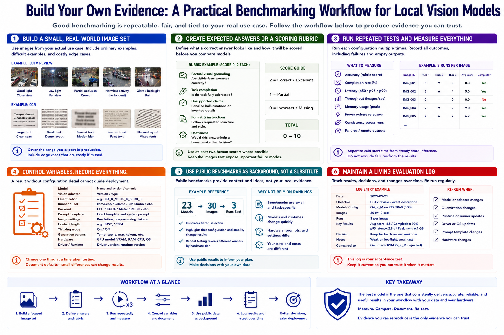

Benchmarking Models Locally
Connecting to LMS... Progress: in progress

Narration
Build a small image set from the actual use case. Include ordinary examples, difficult examples, and costly edge cases. For CCTV review, vary lighting, distance, occlusion, and harmless activity. For OCR, vary font size, layout, blur, and contrast.
Create expected answers or a scoring rubric before comparing models. Score factual visual grounding, task completion, unsupported claims, format, and usefulness. Keep human scoring consistent and preserve examples that expose important failure modes.
Run each configuration repeatedly. Measure accuracy, completion rate, latency, throughput, memory, power where relevant, and consistency. Separate cold-start time from steady inference and record failures or empty outputs rather than excluding them.
Control variables. Record model and vision-adapter versions, quantization, runner, backend, prompt template, image settings, context, thinking mode, generation parameters, and hardware. A result without configuration detail cannot guide deployment reliably.
Use generic public benchmarks as background, not as a substitute for local evidence. The 23-model, 30-image, three-run benchmark illustrates tiered selection and repeat testing, but rankings will age as models and runtimes change.
Maintain an evaluation log with dates, results, decisions, and rejected alternatives. Re-run the suite after model, quantization, runtime, driver, prompt, or hardware changes. The benchmark is a living acceptance test for the workflow.